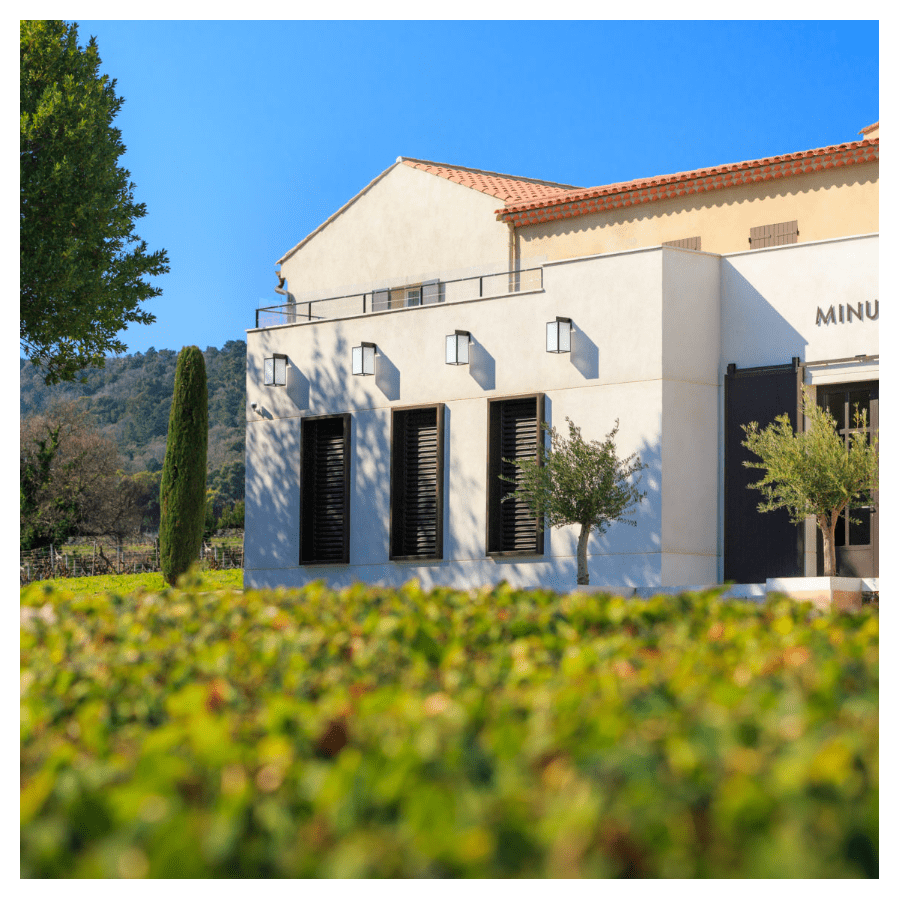
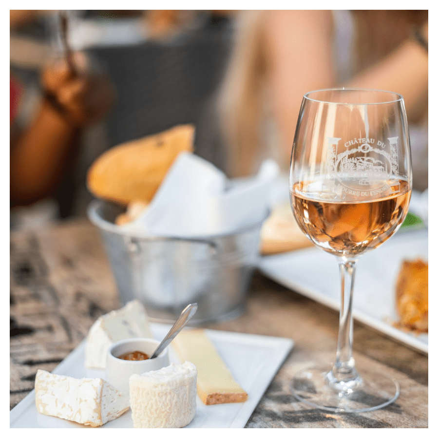

Plage Restaurant

CHEZ CAMILLE
A Ramatuelle, “Chez Camille”, è ancora uno di quei ristoranti che serve una cucina autentica e
famigliare. La specialità
della casa è la mitica bouillabaisse ma nel menu troverete anche pesci freschi ed aragoste del
mediterraneo grigliate
alla brace…
Indirizzo: Résidence Cour d'appel Nioulargue, 83350 Ramatuelle.
Restaurant

SENEQUIER
A pochi passi dall’albergo, inconfondibile ed affacciata sul porto, la terrazza della brasserie
Senequier, rivestita di
rosso, serve dal 1930 caffè frappé, caffè di Liegi o caffè viennesi…Vicino, sulla Place aux Herbes,
troverete il suo
negozio.
Indirizzo: 29 Quai Jean Jaurès, 83990 Saint-Tropez
Plage Restaurant

GIGI
La piazza Gigi è più di un semplice ristorante. Questa casa sulla spiaggia à un ode alla vita ove tutto
è pensato per
riposarsi, condividere e creare ricordi indimenticabili. Se venite in giornata potrete approfittare di
piscina, pool
bar, tende individuali, kids club, spazio benessere…
Indirizzo: 1050 Chemin des Baraques 83350 Ramatuelle
Restaurant

LA SAUVAGEONNE
Venite a scoprire queste cabine in legno di mare nascoste in un nido di bambù. Circondati da una natura
lussureggiante
ed immersi in un’atmosfera festiva ed anticonformista potrete degustare una cucina mediterranea
raffinata ed autentica
con carni e pesci alla griglia e dolci “come a casa”. Alzate gli occhi, cenate sotto le stelle.
Indirizzo: 396 Route de Bonne Terrasse 83350 Ramatuelle
Restaurant

LE TIGRR
Il TiGrr fa' parte degli indirizzi noti ai raffinati conoscitori della Costa Azzurra. Il migliore della
cucina
tailandese e asiatica è servito davanti ad un panorama eccezionale del golfo di Saint-Tropez. Il viaggio
sarà completo
col cocktail Perroquet, dal colore turchese, proposto dal bar-ristorante.
Il menù del ristorante TIGrr propone: sushi, nem, involtini di primavera, branzino alla tailandese, ecc.
Indirizzo: 14 Avenue Paul Signac 83990 Saint-Tropez
The Beaches

PLAGE LES SALINS
Questa spiaggia di sabbia bianca si estende su 500 metri nella natura. L’alta stagione non vi impedirà
di trovare un
posto per installare il vostro telo. Sulla sinistra il sentiero del litorale porta ad una piccola baia,
più calma,
sopratutto d’estate.
Indirizzo: 340 Chemin des Salins, 83990 Saint-Tropez
The Beaches

PLAGE DES GRANIERS
L’auto non è necessaria per raggiungere questa spiaggia nascosta non lontana dalla Citadelle. L’accesso
in barca è
altrettanto semplice. Gettate l’ancora ed una navetta sarà a vostra disposizione ! Ormai potete godervi
il quadro
elegante della spiaggia ed i suoi servizi prima di pranzare con i piedi nella sabbia.
Indirizzo: Plage des Graniers 83990 Saint-Tropez
Vignoble

Château Léoube
Il Château Léoube è una delle aziende viticole più belle del Var. Tra bordo mare paradisiaco e Massiccio
dei Maures, il
castello è particolarmente noto per il suo vino biologico, un pò meno per il suo olio d’oliva e sempre
di più per il suo
caffè. I piedi nella sabbia con vista sulla spiaggia del Pellegrin.
Indirizzo: 2387 Route de Léoube, 83230 Bormes-les-Mimosas
Vignoble

Château Minuty
Il Château Minuty, sulla Presqu’ile di Saint-Tropez, offre da 80 anni, 170 ettari di vigneti. Una grande
storia di
famiglia su più generazioni, che ha saputo rendere quest’azienda eccezionale. Visite e degustazioni
disponibili su
prenotazioni. Chiedere al nostro concierge.
Indirizzo: 2491 Route de la Berle, 83580 Gassin
Mode

Rondini chaussures tropéziennes
Le Tropéziennes, mitici sandali piatti con quattro o cinque strisce di cuoio, sono fabbricate
artigianalmente dalla
famiglia Rondini dal 1927, nella più vecchia casa sulla piazza di Saint-Tropez.
Indirizzo: 18 Rue Georges Clemenceau, 83990 Saint-Tropez
Biscuiterie

biscuiterie de saint tropez
La Biscuiterie de Saint Tropez propone une vasta gamma di biscotti, cake ma anche il famoso torrone
bianco morbido
apprezzato per le mandorle ed il miele che lo cospargono…banditi conservanti, coloranti e additivi. Il
pensiero ideale
da regalare al ritorno.
Indirizzo: Traverse des calfats, 83990 Saint-Tropez
Fromagerie

fromagerie du marché
La Fromagerie du marché dispone di una vasta gamma di formaggi scelti con cura e stagionati al punto
giusto. Questa
bottega bucolica e profumata propone caprini di Provence, Saint-félix di Berry, Anneau di Vic Bihl,
Taupinière de
Charentes, Pélardon des Cévennes, Parmigiano stagionato o tomino di Savoie.
Indirizzo: 16 Place aux Herbes, 83990 Saint-Tropez